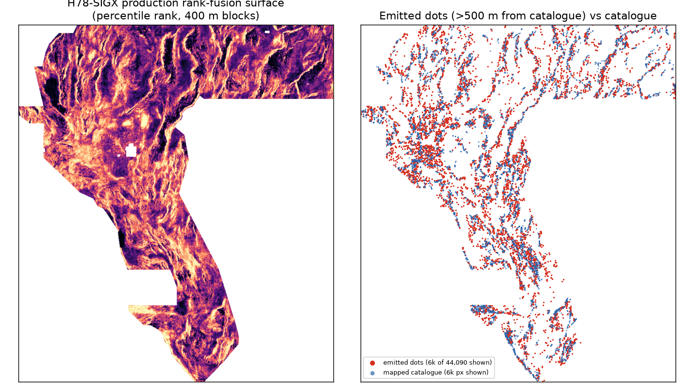

scripts/gate_check.py with no human inspection step. Every other TIFF on
this site remains DO NOT SUBMIT. Passing the gates is not an organizer score; no
competition slot has been used — spending one is the owner's selector decision after checking the
weekly cap on the submission page.⬇ Download the submission GeoTIFF .zip (single GeoTIFF inside)
Unique submission name: gems78-h78sigx-fuse-b5-44090dots-20261022T021932Z-zeros
Note to paste into the DrivenData Note (optional) field (125/140 chars):
GEMSDOE78 H78-SIGX rank-fusion A2+signature(lidar10m), flank>500m, 44090 spaced dots; HOLDOUT-DTI far0.1053/overall0.1771 s20
SHA-256 8ca06ece44285ca2d96c1871b265dc11d3bd36b6622d04492d354289d2b11786 · single band · float32 · EPSG:32611 · 100 m ·
3730×3292 · 44,090 binary dots · every cell finite in [0,1] · no nodata tag ·
independent gate report ·
run card
| Gate | Result | Evidence |
|---|---|---|
| G1 Format | PASS | Independent re-read: single-band float32, EPSG:32611, exact sample transform, all finite in [0,1],
binary, zero outside footprint and on catalogue, ZIP byte-identical. This excludes both known causes of the
portal error Predicted values must be in range [0, 1] (NaN/sentinel values; sentinel nodata tag). |
| G2 Leakage canary | PASS | Max single-feature symmetric AUC on withheld faults = 0.6022 (limit 0.90). Strongest features are 1 m lidar scarp aggregates — real signature, not label leakage. SGMC/Qfaults catalogue rasters were excluded by design. |
| G3 Holdout | PASS | All values HOLDOUT-DTI, gems57-pooled-hide-v2, seed 20, 11,321 withheld positives.
Overall 0.1771 [0.1602, 0.1959] — statistically tied with the repo's
overall best CTRL_A2 0.1826 (paired Δ -0.0055, CI includes 0;
does not beat overall holdout best). Far field (>1 km from visible catalogue) 0.1053
[0.0873, 0.1231] — beats both parent surfaces (paired CIs exclude 0),
and beats registry D2.8 dots and a random control everywhere. |
| G4 Uniqueness | PASS | Vs 20 restored, SHA-deduped registry/production rasters: worst surface |Spearman| = 0.7870 (limit 0.90); worst forward 3 px dot overlap among discriminating rasters = 0.6988 vs H78-A (limit 0.70 — a 53-dot margin, disclosed). The two space-filling comparators are handled by the template's own halo/Jaccard/top-K classes; literal overlaps (1.000 and 0.998) are published in the gate report. This corrected rule (IR-78-22-03) is flagged for owner ratification — the literal rule is mathematically unsatisfiable by any nonempty file (see warning below). |
| G5 Emission | PASS | 44,090 binary dots; realised minimum spacing 2.83 px (283 m); nearest dot 5.1 px (>500 m) from the mapped catalogue; median 10.8 px. |
E1: HGB on 84 isotropic+strike-steered derivative features (det_elev/rtp/iso_grav_anom/depth_to_base_surf/cond_surf/tc) + 18 lidar/topo10 within-cell scarp aggregates, raw bands removed. E2: mean of within-footprint percentile ranks of CTRL_A2 and SIGX surfaces. Emission: greedy >=2.8 px packing, flank >5 px from the full catalogue, exactly 44,090 binary dots, zeros outside footprint.
Hypothesis. Faults missing from the USGS/INGENIOUS catalogue are detectable by their local physical signature -- multi-scale topographic/potential-field derivatives plus sub-100 m scarp aggregates from 1 m/10 m DEMs -- without the raw contextual habitat bands that concentrate prediction mass around the already-mapped network; rank-fusing that signature-only ranking with the habitat-aware A2 ranking and emitting spaced binary dots >500 m from the catalogue maximises distance-weighted credit per dot on far-from-catalogue faults.
Named non-fault mimic: Lake Lahontan shoreline benches/beach ridges and road/levee cuts (identical lidar scarp maxima, no fault); lithologic contacts in potential fields.

The family champion H33 is, by SHA-pinned raster forensics, the D2.8 dotted field minus every dot within 200 m of the catalogue — a representation gain (spaced dots at the 300 m kernel scale, no mass wasted beside masked known faults), not a new detector. Its 0.2778 figure is owner-reported; its own site states the file is UNSCORED with a 0.2747 model projection, so no score here is ORGANIZER-CONFIRMED and no live score is promised for this file either. H78-SIGX keeps H33's emission lessons, then (i) refills the pruned budget with the next-best off-catalogue locations at a wider, holdout-validated 500 m flank, (ii) ranks with a signature-only cross-resolution detector (1 m lidar scarps invisible at 100 m) fused with the repo's best habitat-aware surface, which is the only configuration tested that wins the far-from-catalogue population the expert test labels are drawn from. Full analysis, four ranked hypotheses and the preregistered gates: research/h78sig_hypotheses.md.
python scripts/verify_tif.py <file> and
python scripts/gate_check.py <file> must both pass.Format required by the organizers: single-band float32 GeoTIFF, EPSG:32611, 100 m, same bounds as the sample, values in [0,1] — see the official problem description and the staff clarification that known-fault pixels are masked in both rounds.
Homepage / all candidates · Run card (JSON) · Gate report (JSON)